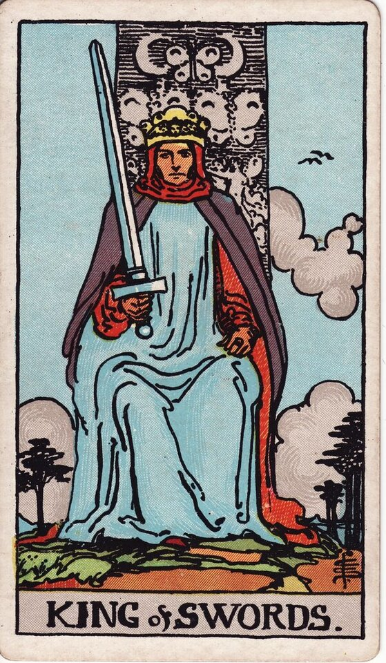

Minor Arcana · Suit of Swords
King of Swords Tarot Card Meaning
The King of Swords is the judge - intellectual authority, truth, fair and principled decisions. Want to know what it means in your spread? Every reader on our line is hand-vetted - connect in under 60 seconds, $1 for your first minute, hang up anytime.
- Hand-vetted readers
- Available 24/7
- Hang up anytime

King of Swords - What It Shows
The King sits upright on his throne, sword held vertical and slightly tilted, gazing straight ahead with stern composure. Butterflies and angels carve his throne; the sky behind is still. He has mastered the air suit outwardly: thought turned into clear principle, judgment, and authority. The King of Swords is the mind as a fair ruler - truth, logic, and ethical command.
King of Swords Upright Meaning
Upright, the King of Swords is intellectual authority, truth, and fair judgment. Clear analysis, principled decisions, ethical leadership, and the ability to cut to the heart of a matter without bias. As a quality to embody: think clearly, decide fairly, lead with integrity, and let truth - not emotion or pressure - guide the call.
King of Swords Reversed Meaning
Reversed, authority corrupts. Manipulation, coldness, tyranny, abuse of power, or sharp intellect used to control, intimidate, or rationalise. The clarity is intact but it serves ego or domination rather than truth and fairness.
King of Swords as a Person
As a person, the King of Swords is authoritative, intelligent, fair, and principled (any gender) - a clear thinker, a decisive leader, often in a role of judgment or expertise. The shadow: cold, controlling, emotionally distant, or using logic as a weapon.
King of Swords as Feelings & in Love
As feelings, the King of Swords is measured and principled - they've thought carefully about you and act fairly, expressing through respect, reliability, and logic more than overt emotion. Example: a caller unsure where she stood with a reserved, rational partner drew this card; the read reframed the restraint as considered commitment - a King of Swords shows care through integrity and clear intention, not grand displays.
King of Swords in Career & Money
For work it's authority, sound judgment, expertise, and principled leadership - the person whose clear, fair call is trusted. Example: someone deciding whether to step into a high-judgment role pulled this card; the message affirmed the fit, provided the authority is wielded fairly rather than coldly.
King of Swords as Advice
As advice: lead with clear, fair reasoning. Make the principled decision, separate truth from emotion and pressure - and use the authority to clarify and protect, not to dominate.
King of Swords Reversed in Love & Career
Reversed, this card deserves a closer look by area. In love, it's logic used to win every argument, emotional coldness, controlling behaviour dressed as "being reasonable," or condescension. In career, reversed it's a tyrannical or manipulative authority, abuse of power, or rationalising unethical decisions. The reversed King's question is whether the intellect serves truth or control. A live reader can help you tell principled firmness from cold domination here.
What People Ask About the King of Swords
The questions readers hear most about this card:
"King of Swords as feelings?"
Measured, principled, considered - care shown through respect and logic.
"Is he emotionally available?"
Upright, committed but reserved; reversed, possibly cold or controlling.
"Reversed - is he manipulating me?"
Possibly logic-as-control or coldness; context and nearby cards decide.
"Person or energy?"
Either - a fair, authoritative individual, or a call to decide with clear principle.
King of Swords - Yes or No?
Upright: a clear, principled yes if it's the fair and logical choice. Reversed leans no, or "not while power is being misused."
King of Swords Timing in a Reading
Timing is the least precise thing tarot does, so treat this as a lean, not a date. Court cards describe a person or energy more than a clock; when the King of Swords does flag timing, readers frame it as a decisive judgment delivered without delay once the facts are clear. Reversed, timing distorts under control games. A live reader reads timing from the full spread and your question far more reliably than the card alone.
King of Swords Card Combinations
Context changes everything - a few pairings readers see often:
King of Swords + Justice
A fair, principled, often legal or formal judgment.
King of Swords + Queen of Swords
Clear, honest, unbiased decision-making in partnership.
King of Swords + The Devil
Intellect or authority used to control and manipulate.
King of Swords in a Tarot Reading
A meanings page is the map; a live reading is the territory. The King of Swords shifts with its position and the cards around it - which is what a hand-vetted reader interprets for your question. See the full Suit of Swords, all 56 cards on the Minor Arcana hub, or start a phone tarot reading.
← Queen of Swords · Back to: Suit of Swords →
What Does the King of Swords Mean for You?
A meanings list is the map; a live reading is the territory. We'll connect you with the right hand-vetted tarot reader in under 60 seconds. $1/min first call · 15 minutes for $10 · hang up anytime · 100% satisfaction promise.
Call (888) 920-6662 NowKing of Swords - Frequently Asked Questions
What does the King of Swords mean?
Intellectual authority and truth - clear, fair, logical judgment and principled leadership.
What does it mean reversed?
Manipulation, coldness, tyranny, or logic used to control rather than clarify.
What does it mean as feelings?
Measured and principled - care shown through fairness, logic, and respect.
What does it mean as a person?
An authoritative, intelligent, fair, principled clear thinker and decision-maker.
How much does a reading cost?
First-time callers pay $1/min, or 15 minutes for $10, and you can hang up anytime.
Get Your Tarot Reading Now
Connected to a hand-vetted reader in under 60 seconds, the cards pulled on your real question, and you hang up with clarity.
Call (888) 920-6662